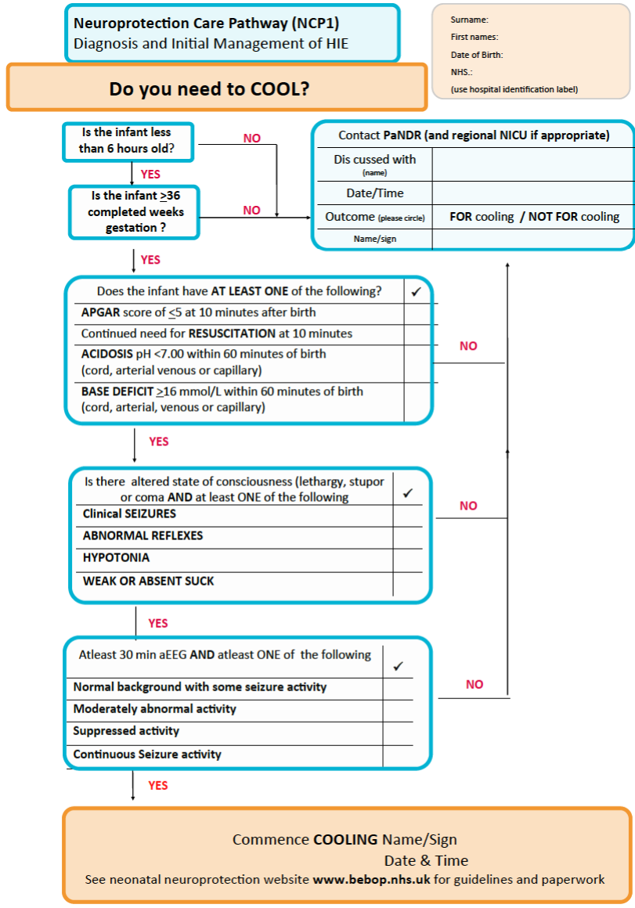

Preventable adverse neonatal outcomes#
Summary#
For this research project, we need to identify a preventable adverse neonatal outcomes, like hypoxic ischaemic encephalopathy (HIE) or chorioamnionitis.
This notebook explores possible markers of HIE, with the most viable markers identified being:
Cooling/moderate hypothermia
Transfer to neonatal intensive care unit (NICU)
Mechnical ventilation
Need to add more about chorioamnionitis throughout, and markers of that?
flowchart LR;
%% Define the nodes and subgraphs
causes("Many possible causes<br>(e.g. cord prolapse, breech presentation,<br>uterine rupture, hypotension)")
hypoxia("Hypoxia ischaemia (asphyxia)")
hie("Hypoxic ischaemic encephalopathy (HIE)")
csection("Caessarean section")
cooling("Cooling (moderate hypothermia)")
vent("Mechnical ventilation")
subgraph "MRI"
mri_basal("Basal ganglia thalamus pattern of damage")
mri_watershed("Watershed predominant pattern of injury")
end
move("Decreased fetal movement")
subgraph "Fetal monitoring (cardiotocography)"
fhr("Abnormal fetal heart rate")
end
breath("Delayed initiation of spontaneous breathing")
resp("Respiratory depression")
pul_hyp("Pulmonary hypertension")
seizures("Seizures")
apgar("Low Apgar scores")
ph("Low umbilical cord pH")
cp("Cerebral palsy")
epilepsy("Epilepsy")
intell("Intellectual disability")
%% Produce the figure
causes --> hypoxia;
hypoxia -- Severe asphyxia<br>(acute near total/acute profound asphyxia) --> mri_basal;
hypoxia -- Less severe asphyxia<br>(partial prolonged asphyxia) --> mri_watershed;
mri_basal --> hie;
mri_watershed --> hie;
hie --> move;
hie --> fhr;
hie --> breath;
hie --> resp;
hie --> pul_hyp;
hie --> seizures;
hie --> apgar;
hie --> ph;
hie --> cp;
hie --> epilepsy;
hie --> intell;
csection -.-> hie;
cooling -.-> hie;
vent -.-> breath;
vent -.-> resp;
vent -.-> pul_hyp;
vent -.-> seizures;
Introduction#
‘Perinatal brain injury is common in term infants’ (births between 37 and 42 completed weeks) in all countries. ‘Almost all forms of perinatal brain injury will result into neonatal encephalopathy’ (brain disease, damage or malfunction). ‘Neonatal encephalopathy occurs in 1-3 per 1000 infants born at term.[source]
The most common cause of encephalopathy is hypoxia ischaemia, sometimes referred to as asphyxia, perinatal asphyxia, or birth asphyxia.
Hypoxia is when there are low levels of oxygen in the blood flowing to the tissues.
Ischaemia is when blood flow (and therefore oxygen) is restricted/reduced to tissues.
Perinatal is pregnancy and first 12 months after childbirth
‘However, it is not always possible to document a clear hypoxicischaemic episode during labour, and several other important aetiologies should be considered as being a primary or contributory cause of the encephalopathy. Other causes of neonatal encephalopathy include include:’
Perinatal/neonatal stroke (ischemic perinatal stroke (IPS) is the leading known cause of hemiplegic CP [source])
Infection (chorioamnionitis - more details below)
Intracranial haemorrhage (bleed in the skull/brain)
Congenital brain anomalies/malformations (brain ‘abnormalities present at birth that can result from developmental disruptions at various embryonic or fetal stages’[source])
Neurometabolic (extensive and diverse set of neurometabolic disorders that can impact the neonatal prain, presentation is non-specific and can mimic acquired things like HIE and sepsis. They are rare, and are primarily genetic disorders leading to disruption of enzyme activity, cellular transport, or energy production [source])
Genetic syndromes
[Source - NHS East of England Guidelines for Management of Infants with Suspected HIE]
flowchart TD;
%% Define the nodes
enceph("Neonatal encephalopathy")
hypoxia("Hypoxia ischaemia")
infection("Chorioamnionitis")
stroke("Perinatal/neonatal stroke")
haem("Intracranial haemorrhage")
congen("Congenital brain anomalies")
neuromet("Neurometabolic disorders")
genetic("Genetic syndromes")
%% Produce the figure
hypoxia --> enceph;
infection --> enceph;
stroke --> enceph;
haem --> enceph;
congen --> enceph;
neuromet --> enceph;
genetic --> enceph;
Hypoxic ischaemic encephalopathy#
Hypoxic ischaemic encephalopathy (HIE) is a type of brain injury that occurs because a hypoxic-ischaemic event prevents adequate blood flow to the infant’s brain during prenatal, intrapartum or the postnatal period. ‘It occurs in 1.5 to 2.5 per 1000 live births in developed countries’. ‘The incidence of HIE has not declined even with advances in obstetric care (i.e. fetal monitoring) aimed at preventing the hypoxic-ischemic event.’[source] Rapid recognition of and response to hypoxic ischaemia is extremely challenging for obstetricians.[source]
By the age of 2, 40 to 60% of infants with HIE will either die or have severe disabilities.[source] These include:
Intellectual disability
Epilepsy
Cerebral palsy (CP)
Causes of HIE#
The exact cause of HIE is often not identified. Causes include:
Cord prolapse
Uterine rupture
Abruptio placenta
Placenta previa
Maternal hypotension
Breech presentation
Should dystonia[source]
There have been several medical malpractice claims related to HIE. This list of causes from Michigan Cerbral Palsy Attornerys includes some examples that relate to that.
Birth trauma - delayed emergency C-section, prolonged and arrested labour, post-term pregnancy, anaesthesia mistakes, intracrainal haemmhorage, fetal monitoring errors
Abnormal size and presentation - cephalopelvic disproportion (CPD), breech presentation, face presentation, macrosomia
Labour and delivery problems - miuse of pitocin or cytotec, uterine rupture, placental abruption, umbilical cord problems (prolapse, compression, nuchal and short), placenta previa, uteroplacental insufficiency, premature rupture of membranes
Maternal health problems - pre-eclampsia, polyhydramnios, oligohydramnios
Infant health problems - fetal stroke, mismanagement of fetal respiration after delivery, mismanaged of fetal anemia after delivery
Note: Haven’t checked all these - but for example of fetal stroke, from a quick google, it appears that HIE and neonatal stroke can often occur together, and that it seems more that the asphyxia is then a risk factor for stroke.
Neontal tests for HIE#
A variety of methods can be used to diagnose HIE, including the APGAR score, brain imaging, umbilical cord blood gas tests, and developmental evaluations.[source]
In terms of imaging, magnetic resonance imaging (MRI) is the preferred imaging technique used ‘during the first week after birth to determine the extent of brain injury and predict neurodevelopmental outcome in infants with symptoms of HIE’. ‘The two main patterns of injury can be distinguished with MRI in the full-term neonate’:
Basal ganglia-thalamus pattern (BGT).
More severe hypoxia ischamia
‘When the baby suffers severe or total hypoxia/asphyxia, the insult is called’ acute near total or acute profound asphyxia.
‘With very severe insults, there will usually be a central pattern of focal neuronal injury (deep gray matter injury) to many levels of the central nervous system, with diffuse and pronounced neuronal necrosis (death of brain cells). When the insult is relatively abrupt and severe, there will be an injury to the deep nuclear brain structures, such as the basal ganglia, thalamus and brainstem.’
‘Children with the BGT pattern of injury tend to be severely disabled due to dyskinetic cerebral palsy (CP).’
Watershed predominant pattern of injury (WS)
Less severe hypoxia ischaemia
This is the other pattern of injury, also referred to as prolonged partial or partial prolonged asphyxia
This ‘usually lasts for more than 30 minutes, mainleading leading to cortical injury in the watershed and parasagittal regions, with relative sparing of damage to the deep gray matter.’
MRI section based on two sources - [1] and [2]
CT scans and ultrasounds can also be used but are not as sensitive / specific.[source]
Signs and symptoms of HIE#
Signs and symptoms of HIE before birth include:
‘Decreased fetal movement
Severe maternal cramping (often accompanied by severe back pain)
Abnormal fetal heart rate
Abnormal contraction pattern
Vaginal bleeding
Abnormally low or high maternal weight gain
Maternal high blood pressure’
Signs and symptoms of HIE shortly after birth (in neonates):
‘Low Apgar scores at five or 10 minutes
Seizures
Difficulty feeding
Breathing problems
Hypotonia (low muscle tone)
Organ problems (failure, damage)
Acidemia (low pH in umbilical cord blood gas tests)
Abnormal response to light
State of abnormal consciousness (hyperalert or lethargic)
Coma’
‘In some children with HIE, especially those with mild to moderate HIE, obvious signs and symptoms of an oxygen-depriving event may not be present at the time of birth… HIE may beconme more evident later in infancy.’ Signs and symptoms of HIE during infancy and early childhood:
‘Impaired motor function
Delayed developmental milestones
Seizure disorder
Delayed growth
Hearing and visual impairments’
Chorioamnionitis#
‘Chorioamnionitis (or intra-aminotic infection) is a term encompassing a broad spectrum of disease during pregnancy that is characterized by inflammation and/or infection of intrauterine structures such as the placenta, the chorion and amnion. The clinical presentation of chorioamnionitis can vary based on clinical, microbiologic, and histologic factors which interact and overlap to varying degrees. Signs and symptoms depend on whether a primary inflammatory versus an infectious process is found.’[Source]
Anecdotal mentions of “cytokine-related” outcomes are because chorioamionitis involves inflammation and/or infection, and cytokines are signalling proteins that help control inflammation in the body.
‘Chorioamnionitis is rare in full-term deliveries (more than 37 weeks gestation), affecting only around 1-4%. It is much more common in the case of premature births (less than 37 weeks gestation) where it affects 40-70% of births. Risk factors for developing chorioamnionitis during pregnancy include urinary tract infection, STIs (trichomoniasis, chlamydia, gonorrhoea, syphilis or HIV), group B strep, and bacterial vaginosis.’[source] The most common cause is ‘ascending infections into the placenta and chorion-amnion’.[Source]
‘If chorioamnionitis is suspected, a blood test or vaginal swab test will be taken. Following a diagnosis, IV antibiotics will likely be administered to treat the infection and reduce the risk of complications for mother and baby.’[source]
It is important to have a timely diagnosis and treatment of chorioamnionitis. ‘Chorioamnionitis sometimes cannot be prevented, and the condition is not always obvious at first. However, a doctor should be able to identify and address chorioamnionitis before childbirth starts. If a doctor fails to diagnose this condition and provide prompt treatment, they may be liable for medical malpractice. This means that they did not follow the procedures that a competent doctor would have followed, which resulted in a missed or delayed diagnosis and potentially untreated or inadequately treated chorioamnionitis.’[Source - Justia (legal advice)]
Outcomes#
Fetal/neonatal outcomes
Preterm neonates are at higher risk for complications than term neonates.
Immediate consequences include:
Neonatal depression at birth
Neonatal sepsis
Need for mechanical ventilation
Intraventricular hemorrhage
Fetal inflammatory response syndrome (FIRS)
Neonatal mortality.
Long-term outcomes/associations include:
Bronchopulmonary dysplasia
Periventricular leukomalacia
Cerebral palsy
Outcomes for the mother/parent
Higher risk of:
Post-partum haemorrhage
Premature birth
Postpartum infection to mother [source]
Caessarean section
Need for blood transfusion
Uterine atony
Pelvic abscesses
Postpartum endometritis
Intensive care unit (ICU) admissions.
Severe consequences include:
Puerperal sepsis, which is an important cause of global maternal mortality both in low- and high-resource settings
Defintion of chroioamionitis#
‘There are a variety of definitions for chorioamnionitis set forth by international and national health authorities. In their guideline document, the World Health Organization (WHO) defines peripartum infections as “bacterial infection of the genital tract or its surrounding tissues occurring at any time between the onset of rupture of membranes or labor and the 42nd day postpartum in which two or more of the following are present: pelvic pain, fever, abnormal vaginal discharge, abnormal smell/foul odor discharge or delay in uterine involution”. The WHO’s International Classification of Diseases ICD-10 and ICD-11 define chorioamnionitis as O41.12X “Chorioamnionitis” and as JA88.1 “Infection of the amniotic sac and membranes,” respectively. The United Kingdom’s National Institute for Health and Care Excellence (NICE) guidelines for preterm labor does not mention “chorioamnionitis” but does describe prelabor rupture of membranes as risk factor for “intrauterine infection”. The American College of Obstetricians and Gynecologists defines chorioamnionitis as “an infection with resultant inflammation of any combination of the amniotic fluid, placenta, fetus, fetal membranes, or decidua”.’
Outcomes that might indicate an infant experienced HIE#
We want to focus on an outcome that is impacted by obstetrician choices during delivery - hence, focussing on HIE.
In designing this research study, we want to explore possible outcomes that could be used to indicate that an infant has experienced HIE. The term ‘outcome’ is used fairly loosly to refer any indicators, including:
Scores and measurements
Observations
Interventions
Diagnoses
We explore a range of possible indicators below.
Summary#
need to sort out some of these and if they’re in the right category, and make sure any changes made match between below and this. also, maybe just have this in the summary above, and not here as well
Good indicators of adverse outcomes that could have been prevented:
- Cooling/Moderate hypothermia
- Transfer to neonatal intensive care unit (NICU)
- Mechnical ventilation
In between ish:
- Low Apgar-5 score
- NNAP record of encephalopathy
- MRI with basal ganglia damage
- Diagnosis of HIE
- Death
Potentially suitable:
- Neonatal resuscitation
Poor indicators of adverse outcomes that could have been prevented:
- Abnormal CTG
- Low pH
- Low Apgar-1 score
- Transfer to any neonatal care services
- Meconium-stained amniotic fluid
- Intubation
- Diagnosis of cerebral palsy
Abnormal CTG#
sort this out
Hypoxic events trigger the fetal sympathetic and parasympathetic nervous systems, so variations in FHR can be monitored to detect signs of fetal compromise.[source]
‘Cardiotocography (CTG) was introduced in the 1960s to detect fetal heart rate (FHR) patterns thought to indicate hypoxia. However, its value has been an ongoing topic of debate. A Cochrane review of trials evaluating the efficacy and safety of the intrapartum CTG showed that although the use of CTG is associated with a reduction in neonatal seizures it does not prevent perinatal death or cerebral palsy. Furthermore, CTG monitoring has been associated with rising cesarean section rates which are independently associated with maternal risks.’
‘A key issue with the use of CTG is interpretation. Several reports have suggested CTG misinterpretation as the main contributory cause in preventable cases of HIE and perinatal deaths. There are different guidelines worldwide for CTG interpretation. There is not only substantial inter-observer disagreement using individual guidelines but also poor agreement when the comparison is made across different guidelines. Furthermore, some experts argue that looking at CTG based on pattern recognition alone with emphasis on FHR decelerations results in unnecessary interventions for non-acidotic babies who mount normal responses to hypoxia and has no correlation with neonatal outcomes.’
‘During labor the fetus is intermittently deprived of O2, with a fall of 5% to 10% in oxygen saturation (SaO2) below baseline when the intrauterine pressure exceeds approximately 30 mm Hg during myometrial contractions. At 35 mm Hg of intrauterine pressure, which is the level at which we can usually feel the contractions on the abdominal wall, the uteroplacental blood flow disappears at the end of diastole, and at 60 mm Hg diastolic flow ceases completely. The occurrence of FHR decelerations accompanied by transient shunting of blood from peripheral to central organs during such O2 deprivation is a normal physiological fetal response, known as the “diving reflex” in aquatic mammals and birds. The diving reflex thus strives to preserve an aerobic metabolism in central organs, provided by the concomitant metabolic down-regulation in peripheral organs. In a fetus already suffering a baseline O2 deficit when at rest, such as with placental insufficiency in fetal growth restriction (FGR), the superimposed hypoxic stress by uterine contractions may progressively cause severe hypoxia, acidosis, and severe FHR decelerations. A loss of umbilical artery end-diastolic flow may then appear during both variable and late FHR decelerations. The umbilical artery flow resistance increases concomitantly which further compromises the O2 diffusion across the placental membranes. The lowest SaO2 is reached at the end of a contraction, and it takes up to 2 minutes after the peak of contraction to recover to baseline. Thus, when >5 labor contractions per 10 minutes occur, a full recovery might not be reached between contractions, and a superimposed fetal hypoxemia (low blood oxygen) develops. An intact fetus resists the strain of normal labor, but with tachysystole (>5 contractions every 10 minutes) a critical limit might be reached, which then also affects a previously healthy fetus.[source]
• The presence of FHR accelerations (either spontaneous or stimulated) reliably predicts the absence of fetal metabolic acidemia at the time it is observed. • Moderate FHR variability reliably predicts the absence of metabolic acidemia at the time it is observed • The absence of accelerations does not reliably predict fetal acidemia • Minimal or absent FHR variability alone does not reliably predict the presence of fetal hypoxemia or acidemia • NICHD, 2008 • Remember: • Minimal variability may reflect fetal sleep, narcotics, or other drugs[source]
Suitability as a model outcome#
Cons:
High intra- and inter-observer variability in CTG interpretation
Record of abnormal CTG may be inconsistent/lack detail beyond just “it was abnormal” - in which case, would need the raw CTG and to identify what was abnormal - and that may not be what the obstetrician thought was abnormal
Poor indicator. There is high intra- and inter-observer variability in CTG interpretation and although a consensus opinion would improve the outcome's validity, the poor association between an abnormal CTG and adverse neonatal outcomes ultimately means this would not be an appropriate outcome. Note: Although we don't want to use it as an outcome to tell us HIE as occurred, we can use it as a risk factor to help predict occurence of HIE.
Umbilical cord blood gas analysis#
When is umbilical cord blood gas analysed?#
‘Umbilical cord blood gas analysis is recommended by NICE whenever there has been a concern about the baby either in labour or immediately following birth.’[source]
Examples of when NHS Milton Keynes guidelines suggest cord blood must be taken are:
All emergency caesarean sections and instrumental births
Delivery for presumed ‘ fetal distress’
Shoulder dystocia
If fetal blood sampling has been performed during labour
Following birth if the baby’s condition is poor (low apgars = to / less than 7)
Significant meconium stained liquor present
APH/Abruption
Preterm birth
Multiple pregnancy
Pyrexia in labour[source]
How is it collected?#
Blood can be collected from the:
Umbilical artery -
Gives more accurate information about fetal metabolic condition and correlates better with neonatal outcomes - since blood rich in carbon dioxide eliminated by the fetus returns to the placental circulation through the umbilical arteries
Umbilical vein -
Easier to sample due to large diameter
Less accurate as mainly reflects placental metabolism rather than fetal metabolism - as the umbilical vein carries oxygenated blood to the fetus from the placenta.
During umbilical cord compression, the venous flow will compress more than the arterial flow (as veins are more compressible than arteries). The fetus will respond by extracting more oxygen, hence eliminating more CO2 through the umbilical artieries, but the umbilical venous acid-base status will reamin equilibriated by the normally functioning placenta [source]
Due to these differences, it is important to take paired arterial and venous cord blood samples. If only a single sample is taken, there is no way of knowing if it is arterial or venous.[source]
It is also important to note the timing of the samples:
Clamped umbilical cord (isolated) will have reliable pH, pO2 and pCO2 up to 60 minutes after bith
Unclamped (remianing in continuity with the placenta) will be unreliable as early as 20 minutes after delivery since ongoing placental metabolism will obscure the measurements
Lactate levels obtained more than 20 minutes after birth will be unreliable regardless of whether they are from a clamped or unclamped cord.[source]
NHS Milton Keynes Guidelines state that the samples should be taken from a double clamped segment of cord so it’s isolated from the placenta.[source]

Diagram of the fetus, placenta and umbilical blood vessels[source]
What blood gases are analysed and why?#
Acidemia is when there is a low blood pH, which occurs due to an increase in the hydrogen ion H+ concentration. There are three types of acidemia: metabolic, respiratory and mixed.
Metabolic acidosis: During oxygen (O2) deprivation:
The fetus will switch from aerobic metabolism (relies on oxygen) to anaerobic metabolism (does not use oxygen)
This will result in the accumulation of lactic acid (which is a combination of lactate and H+), which leads to metabolic acidosis
Buffer bases (primarily bicarbonate) are used to try and neutralise the lactice acid. If buffer bases are depleted, this can lead to metabolic acidemia
Note: metabolic acidosis can refer to process that lowers the pH, whilst acidemia describes the state of having a low blood pH
Hence, during metabolic acidosis, we see decreased pH, low pO2, and increased base deficit[source]
Fetal respiratory acidosis is a relatively common transitory state that resolves soon after birth when the baby starts to breathe and is of little clinical significance.[source] It occurs when the fetus takes in less oxygen during hypoxia, and so more CO2 builds up in the blood, which increases the level of carbonic acid (H2CO3), decreasing the pH.
Mixed acidosis is when it is caused by metabolic and respiratory factors. The initial cause of acidosis will often by respiratory, but without improvement in oxygenation, the fetus will resort to anaerobic metabolism, leading to metabolic acidosis.[source]
Metabolic acidosis reflects tissue oxygen debt and therefore is of greater prognostic significance than respiratory acidosis.[source] It is therefore important to distinguish between metabolic and respiratory acidosis.
Metabolised acidosis is characterised by reduced pH, decreased base excess (i.e. increased base deficit), and elevated pCO2
Respiratory acidosis is characterise by reduced pH, but normal PCO2 and base excess
Mixed acidosis is characterises by low pH, increased PCO2, but normal base excess[source]
Infants with intrauterine growth retardation (IUGR)/growth-restricted infants are at increased risk of metabolic acidosis than normal growth (AGA) infants.[source]
flowchart TD;
%% Define the nodes and subgraphs
o2("Oxygen deprivation<br>(decreased pO2)");
anae("Anaerobic metabolism");
subgraph "Metabolic acidosis"
lac("Accumulation of lactic acid<br>(lactate + hydrogen ions)");
h2("Increased hydrogen ions")
buff("Buffer bases used to try and neutralise pH")
base("Base deficit")
ph_dec("Decreased pH")
end
subgraph "Respiratory acidosis"
co2("Increased pCO2")
carb("Increased carbonic acid in blood")
ph_dec2("Decreased pH")
end
quick("Quicker to resolve<br>Less clinical significance")
slow("Slower to resolve<br>More clinical significance")
%% Produce the figure
o2 --> anae;
anae --> lac;
lac --> h2;
lac --> buff;
buff --> base;
h2 --> ph_dec;
base --> slow;
ph_dec --> slow;
o2 --> co2;
co2 --> carb;
carb --> ph_dec2;
ph_dec2 --> quick;
What are the accepted thresholds for these blood gases?#
Some degree of acidemia will always develop during labour, and it is normal to see some decrease in arterial and venous pH and bicarbonate and increase in base deficit.
According to NHS trust guidelines[source [1] and [2]], the normal blood gas values for a neonate born at term are:
Location |
pH |
Base excess (mmol/L) |
pO2 (mm Hg) |
pCO2 (mm Hg) |
|---|---|---|---|---|
Umbilical artery |
7.10-7.38 |
-9.0 to 1.8 |
4.1 to 31.7 |
39.1 to 73.5 |
Umbilical vein |
7.20-7.44 |
-7.7 to 1.9 |
30.4 to 57.2 |
14.1 to 43.3 |
In NHS guidelines, it doesn’t include measurement of lactate.
‘The generally accepted cut off value for a pathological acidosis (risk of seizures, moderate to severe HIE and cerebral palsy) is umbilical arterial pH ≤ 7.0. It is unlikely that acute acidosis with a pH value greater than 7.0 is directly associated with cerebral palsy.’[source - Joint NHS Trust Guidelines]
The American College of Obstetricians and Gynecologists suggests using a cord artery pH < 7.00 and base deficit >= 12.0 mmol/L to indicate metabolic acidosis, since this threshold was found to strongly associate with neonatal morbidity and death. However, use of stationary reference cut-off points can be an issue, as base deficit, pH, pCO2 and lactate can vary with gestational age.[source]
Association with neonatal outcomes#
In a systematic review and meta-analysis of 51 studies, low arterial cord pH was significantly associated with:
Neonatal mortality (OR 16.9, 95% CI 9.7-29.5, I2=0%)
Hypoxic ischaemic encephalopathy (OR 13.8, 95% CI 6.6-28.9, I2=0%)
Intraventricular haemorrhage or periventricular leucomalacia (OR 2.9, 95% CI 2.1-4.1, I2=0%)
Cerebral palsy (OR 2.3, 95% CI 1.3-4.2, I2=0%).[source]
Although this is helpful to understand, ultimately we are interested in using pH for prognosis, and that is not the focus of that review.
‘The American College of Obstetricians & Gynecologists (ACOG) and The American Academy of Pediatrics have also jointly set up the four essential criteria for establishing a causal link between intrapartum hypoxic events and cerebral palsy and included:
Significantly low cord arterial pH (<7)
Early onset of moderate or severe HIE in infants born at 34 weeks of gestation or more
Cerebral palsy of the spastic quadriplegic or dyskinetic type
Exclusion of other identifiable etiologies.’[source]
These criteria were derived through consensus though, since existing observal studies can have inconsistent results, partly as a result of the different thresholds used to define abnormality, the variety of outcomes evaluated, and the different variables measured (arterial cord pH, venous cord pH, or base excess) - and it has been suggested that neonatal complications are associated with metabolic acidosis rather than respiratory acidosis.[source]
Neonates who just have low pH: ‘Interestingly, a pH as low as 7.00 is usually tolerated by the fetus without any adverse outcome. Most infants with a cord pH less than 7.00 do not develop neurologic problems after birth, nor even when followed for 6.5 years. An isolated respiratory acidosis is very rarely associated with poor outcomes. Thus, infants born with a pH less than 7.00 and without other abnormal clinical findings typically do not require any further investigation or NICU admission.’[source]
Neonates with low pH, high base deficit, and other concerning indicators: ‘When a pH less than 7.00 and/or a base deficit of more than 12 mmol/L are associated with other abnormal findings such as abnormal fetal heart tracings, 5-minutes Apgar scores equal to or less than 5, a requirement for intubation, they become strong predictors of poor neurological sequelae. Eighty percent of these newborns with clinical indicators of acidemia with a low pH develop seizures in the first few days after birth. Previous studies have shown that cord pH less than 7.00 is proportional to the risk and the severity of neurologic abnormalities. Furthermore, 80% of infants born with a cord pH less than 6.70 develop symptoms and signs of neonatal encephalopathy.’[source]
Suitability as a model outcome#
Pros:
The combination of pH, base deficit and other concerning outcomes can be a strong predictor of adverse neonatal outcomes.
Cons:
Although pH has a strongly relationship with neonatal outcomes, using it for prognosis as a single indicator, pH alone is a poor marker of adverse neonatal outcomes
Inconsistently recorded - won’t measure it if expect things to be fine
Inconsistently measured - anecdotally, it can be often measured from just artery or vein and not both - although guidelines state it should be a paired sample
Summary: Maybe - but not pH alone - would need a combination of pH and base deficit (to identify metabolic acidosis), and to combine it with other markers (e.g. Apgar, intubation) - and would need to know the source of the blood gas analysis (arterial/venous) - and design would need to consider that these are only measured when there were concerns during labour or birth.
Apgar scores#
Evaluates ‘neonates immediately after birth and in response to resucitation’. Record score at 1 minute (Apgar-1) and 5 minutes (Apgar-5). Score of 0-2 for five elements:
Appearance (pale/blue, pink with blue extremeties, pink - note: most will score 1 for color as peripheral cyanosis (blue discoloration of extremeties) is common among normal infants, and also colour can be misleading in non-white infants)
Pulse (heart rate 0, <100bpm, or >100pm)
Grimace (no response to stimulation, grimace to stimulation, cry/cough/sneeze to stimulation)
Activity (loose/floppy muscle tone, some tone, flexed muscle tone)
Respiration (not breathing, slow/weak breathing, vigorous crying)
They were ‘originally designed to assess need for intervention to establish breathing at 1 minute’, and not as an outcome measure. Interpretation:
Apgar score alone is not ‘evidence of asphyxia or proof of intrapartum hypoxia’
Low Apgar-1 ‘is not predictive of adverse clinical outcomes or long-term health issues’ as most infants will have normal scores by 5 minutes
Apgar-5 < 7 is non-reassuring, and low scores ‘correlate with mortality’ and ‘increased risk of cerebral palsy’ - most infants will ‘not go on to develop cerebral palsy, but lower scores over time increase risk’
Suitability as a model outcome#
Pros:
Routinely collected
Cons:
Subjective
add details around suitability as an outcome
Summary: Maybe
Cooling / Moderate Hypothermia#
‘Therapeutic hypothermia is currently the only neuroprotective treatment that has been proven to reduce death and neurological sequelae in term infants with moderate to severe HIE.’ It must be started within 6 hours of birth.[source]
‘Hypothermia treatment is delivered through either selective head or whole body cooling of the infant… decreasing the infant’s body temperature to between 33°C and 36.5°C. Infants are generally cooled for 48 to 72 hours and then rewarmed slowly to prevent complications (e.g., hypotension).’[source]
It works by minimising ‘the production of toxic substances that can cause brain injury. When the brain does not have enough oxygen or energy to function, it produces toxic chemicals which can ultimately damage a baby’s brain. When oxygen is restored to the brain, there is a time period where the brain attempts to recover from the injury. Unfortunately, a second wave of toxic chemicals is often released, which can further injure the brain. Because of this, the majority of brain damage can occur during and after restoration of blood flow and oxygen to the brain – not necessarily during birth. Once the cooling therapy is completed, we slowly warm the baby back up to inhibit the production of additional chemicals and reduce the risk of brain damage.’[source]
‘Many infants still experience adverse outcomes despite cooling, including cerebral palsy (CP), cognitive, visual or hearing impairment, and even death. Moreover, a significant proportion of infants with mild HIE, who are currently not eligible for therapeutic hypothermia, have an adverse outcome at follow-up.’[source]
The image below is the criteria for cooling, copied from the NHS East of England Guidelines for Management of Infants with Suspected HIE:

Suitability as a model outcome#
Pros:
As far as have understood it, this treatment is only given to infants when doctors believe they have moderate to severe HIE, so it should be a confident marker of a sick baby, sick enough to warrant this treatment.
Cons:
Wouldn’t include mild HIE
Choice to cool will still vary between clinicians in spit of guidelines - implementation has not been consistent around the country, and there has been alot of change - if you look over time, there will be changes in choice to cool.
Anecdotally, cooling 1 in 200.
Summary: Yes - should be a good marker of moderate to severe HIE - but there may still be some variation between obstetricians in choice to use cooling, and over time.
Transfer to neonatal care services#
Neonatal care services ‘provide care for all babies less than 44 weeks post menstrual age that require on-going medical care’. Each year, around 10% of all births ‘will receive some type of neonatal care’.
Types of neonatal unit:
Neonatal Intensive Care Unit (NICU)
Local Neonatal Unit (LNU)
Special Care Unit (SCU)
Types of care:
Intensive Care - ‘for babies who are the most unwell or unstable and have the greatest needs in relation to staff skills and staff to patient ratios’
High Dependency Care - ‘for babies who require skilled staff but where the ratio of nurse to patient is less than intensive care’
Special Care - ‘for babies who require additional care delivered by the neonatal service but do not require either intensive or high dependency care’
Transitional care - also known as ‘Special Care with Primary Carer Resident’. Either delivered by a dedicated transitional care unit or on a postnatal ward. This is when more care is needed than normal, and this is provided by the parent with support from a midwife/healthcare professional trained in ‘elements of special care but does not require a specifialist neonatal qualitfication’
[Source (NHS England Neonatal Critical Care Service Specification)]
Suitability as a model outcome#
Any time of admission#
Pros:
Want to understand as admission is expensive
Cons:
Many of the babies will only need a short period of care and will not have poor long-term outcome
Summary: No - too broad, not definitely linked with poor long-term outcomes
Pros:
Babies admitted to NICU will be the most unstable / unwell.
Transfer to neonatal care services can be important for cost-benefit analyses.
Cons:
Would the reasons for admission to NICU be quite broad?
Some datasets won’t state the type of admission
Summary: Yes - admission and length of stay in NICU is a good marker of poorly neonates - but would it be quite a wide spectrum of reasons for admission?
Meconium-stained amniotic fluid#
Meconium is the first feces of the newborn and is typically sticky and greenish-yellowish-black. If this happens in utero (whilst the baby is still in the womb), the meconium can get into the amniotic fluid (the liquid surrounding the fetus).
Meconium-stained amniotic fluid (MSAF) ‘occurs in 5 to 20% deliveries at term’ and is considered a risk factor for several different neonatal complications including:
Neonatal hypoxic-ischemic encephalopathy
Neonatal sepsis
Neonatal seizures
Meconium aspiration syndrome (MAS) - respiratory distress in infants with MSAF that can’t otherwise be explained - only developed by 5% infants exposed to MSAF
Cerebral palsy
Suitability as a model outcome#
add details around suitability as an outcome
Summary: No
Intubation#
Intubation, also known as tracheal or endotracheal intubation is the insertion of a breathing tube into the trachea.[source] Endotracheal suctioning is a common procedure on intubated infants ‘to clear secretions and maintain the airway patency’.[source]
In the 1980s and 1990s, ‘all infants born through MSAF (both vigorous and non-vigorous) were routinely intubated after delivery’, and intervention decisions were ‘based on the consistency and thickness of the meconium’.
In 2000, the fourth edition of the Neonatal Resuscitation programme (NRP) guidelines stopped recommending intubation ‘for vigorous infants born through MSAF’.
In 2016, the seventh edition of the NRP guidelines stopped recommending ‘routine intubation and tracheal suctioning for non-vigorous infants born through MSAF’. This was on the basis of a lack of evidence to support intubation and tracheal suctioning, ‘in the context of avoiding the potential harm of intubation and the subsequent delay in initiating the initial steps of neonatal resuscitation’.
We understand that now intubation and suctioning is only used if you are actively resuscitating and unable to move the chest.
Suitability as a model outcome#
Using intubation as an indicator for meconium at delivery would not be a viable outcome as newborns are no longer intubated for this. In historical data, you would see a shift from it being used to not.
Summary: No
Neonatal resuscitation#
Types of resuscitation effort required:
Around 5 to 10% of all babies will require some degree of resuscitation / assistance to begin breathing at birth. Examples include tactile stimulation, airway clearing or positiong.
About 3 to 6% require basic neonatal resucitation, which would incorporate assisted ventilation.
Advanced resuscitation is required for less than 1% of all babies born, and for around 2% of babies who do not breathe at bith. This involves chest compression, intubation or medications.[source]
Some terms related to asphyxia, death and resuscitation have been used interchangeably previous. Currently the terminology is:
Perinatal asphyxia - insufficient oxygen (before, during or after birth). Intrapartum asphyxia accounts for both fetal deaths in labour and neonatal deaths.
Intrapartum fetal death - death of fetus during labour (formerly called birth asphyxia). Hypoxia is thought to be a factor in 90% of intrapartum deaths.
Neonatal encephalopathy - brain damage in neonates
Suitability as a model outcome#
Potential cons:
Would the data have information on the type of resuscitation
Hypoxia can lead to you needing resuscitation, and can also lead to HIE, so they are linked - but not all babies with HIE will have needed resucitation? If hypoxia was before birth, or if they are managing to breath?
Summary: Unsure
Mechanical ventilation#
Mechnical ventilation is used for neonates with respiratory failure. It aims to oxygenate the baby and to remove carbon dioxide. It carries risk of injury to the lungs, brain and other systems.[source]
How is this linked to HIE?#
Respiratory management of asphyxiated infants is challenging because both the hypoxic-ischemic (HI) insult and hypothermia have an impact on respiratory functions
Perinatal hypoxia is often associated with elevated pulmonary vascular resistance or meconium aspiration syndrome (MAS). In addition, HI injury is typically followed by cerebral reperfusion and excessive oxidative stress
Hypothermia causes a decrease in metabolic rate with a parallel reduction in oxygen (O2) consumption and carbon dioxide (CO2) production [source]
‘Frequently observed symptoms in asphyxiated newborns, such as delayed initiation of spontaneous breathing, respiratory depression, pulmonary hypertension, and seizures often necessitate mechanical ventilation (in >60% of asphyxiated term newborns)’. Newborns with more severe asphyxia are more likely to need mechnical ventilation.[source]
What other reasons are there for ventilation?#
There are many reasons for ventilation, but something that commonly comes up is’newborn respiratory distress syndrome (NRDS). This is ‘when a baby’s lungs are not fully developed and cannot provide enough oxygen, causing breathing difficulties. It usually affects premature babies.’ ‘Around half of all babies born between 28 and 32 weeks of pregnancy develop NRDS. In recent years the number of premature babies born with NRDS has been reduced with the use of steroid injections, which can be given to mothers during premature labour.’ Regarding treatment after birth, this may just be extra oxygen for mild symptoms via an incubator (small mask over nose/face or tubes into nose), but if symptoms are more severe, this can be mechnical ventilation which supports or takes over their breathing.[source]
Suitability as a model outcome#
Pros:
Anecdotally Harriet found there wasn’t much variation between true sites, implying it’s a true marker of a sick baby rather than something that varies alot with clinician practice.
Pro/Con:
The pathologies of infants requiring mechnical ventilation are broad
Cons:
Not all infants with HIE will require mechnical ventilation - but hopefully would include more severe cases, as infants with more severe asphyxia are more likely to require it
Summary: Yes
MRI showing basal ganglia damage#
As described above, MRIs can be used to help detect/diagnose HIE. There are different patterns of damage, with basal ganglia damage being associated with more severe asphyxia and with outcomes like cerebral palsy.
Suitability as a model outcome#
Cons:
We likely can’t get this data
Summary: No - as we don't anticipate we can get this data.
Cerebral palsy#
‘Cerebral palsy (CP) is a neurologic disability affecting body movement, muscle tone, and posture’. It ‘is caused by damage or developmental defects to the areas of the brain that control the movement of the body and coordination.’ There are four types: spastic CP, dyskinetic CP, ataxic CP and mixed CP.[source]
‘The abnormal development of the brain or damage that leads to CP can happen before birth, during birth, within a month after birth, or during the first years of a child’s life, while the brain is still developing.’ It can be classified as:
Congenital CP - if related to development/damage ‘that occurred before or during birth’ - this is the majority (85-90%)
Acquired CP - if related to development/damage that occurred ‘more than 28 days after birth’ - usually ‘an infection (e.g. meningitis) or head injury’[source]
Causes include:
Oxygen deprivation (asphyxia) - a ‘wide range of obstetrical complications and events during pregnancy can threaten the supply of oxygen to the baby’s brain’
Infections - ‘infections during pregnancy, labour and delivery can potentially cause damage to the baby’s brain’, including viral infections (eg. rubella, cytomegalovirus) and parasitic infections (eg. toxoplasmosis) - as well as ‘infections of the placental membranes and amniotic fluids (chorioamnionitis)’
Premature birth - premature babies ‘are 30 times more likely to be diagnosed with cerebral palsy’ - this is often because ‘premature babies frequently experience brain haemorrhages and periventricular leukomalacia (PVL)’, which cause brain damage that can lead to cerebral palsy
C-section delays - if there are complications ‘during labour and delivery, a timely emergency c-section can be the only way to avoid oxygen deprivation and brain damage to the baby’. ‘Even a very short delay in performing a c-section can damage the baby’s brain and result in cerebral palsy. This is likely the leading cause for birth injuries from cerebral palsy leading to a medical malpractice lawsuit’
Head trauma - ‘external trauma to the baby’s head during childbirth can potentially cause the type of brain damage that results in cerebral palsy’[source]
‘Cerebral palsy is one of the most costly neurologic disabilities because of its frequency (2/1000 births) and persistence over the life span.’[source]
‘In order to define international criteria to establish a causal link between intrapartum hypoxic events and CP, the ACOG Task Force on Neonatal Encephalopathy recommended a multidimensional assessment process for NE and defined diagnostic criteria, based on the premise that NE due to acute hypoxia-ischemia will be accompanied by abnormal neonatal signs and be associated with contributing events in close temporal proximity to labor and delivery. NE does not necessarily lead to permanent neurologic impairment, but it is a prerequisite to making association between intrapartum injury and CP’.[source]
Suitability as a model outcome#
Cons:
Diagnosis often later in childhood, so unlikely to be in neonatal datasets
Won’t be able to distinguish congenital and acquired CP in the data
Only around 15% of cases of CP are attributable to intrapartum hypoxia–ischemia[source]
CP is only one of the possible outcomes of fetal hypoxia[source]
Summary: No
NNAP record of encephalopathy#
The National Neonatal Audit Programme includes a measure of encephalopathy in babies born at 35 weeks gestational age or above, within the first three full calendar days after birth.
Encephalopathy is categorised if the baby was admitted to neonatal care for at least 72 hours and the daily summaries from those 72 hours include two or more of the following neurological signs in the same daily data summary:
Abnormal tone
Lethargic or comatose consciousness
Convulsions
These details were captured on BadgerNet in daily summary forms (forms are created for each baby for each calendar day where they are an inpatient on a neonatal unit).
In the 2019 NNAP report on data from 2018, there was 0.01% missing data.
Suitability as a model outcome#
Pros:
As this is for auditing, does this incentivise more data completion?
Cons:
It does not appear to be in the latest NNAP Audit Measures [source]
Level of missing data is low, but is that because it assumes incompletion of tone and consciousness and convulsions means no encephalopathy, when actually it could be failure to complete record?
This is not a specific type of encephalopathy
This is not the typical criteria for diagnosis of HIE?
Summary: Unlikely - primarily as I think it has been removed from NNAP Audit
Death#
The leading causes of neonatal deaths are:
Pre-term birth
Intrapartum-related complications (birth asphyxia or inability to breathe at birth - accounts for 20.9%[source])
Infection
Birth defects
Suitability as a model outcome#
Cons:
Variety of reasons for neonatal death, won’t all be preventable
Summary: No - unless we know cause of death - and, in which case, particular causes would be the marker